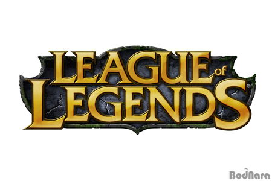

라이엇 게임즈가 개발 및 서비스 중인 MOBA 장르의 게임. 국내에선 게임 명칭의 앞 글자들을 따서 롤, 서양에서는 League 등으로 불린다. 이전까지 있었던 MOBA(AOS) 게임들보다 진입 장벽을 낮추는 것으로 높은 인기를 얻었고 현재는 전 세계에서 많은 유저들을 보유중인데 PC 게임 중 전 세계에서 많이 플레이하는 게임 중 하나이며 2016년 기준 월 플레이어 수 1억 명 이상을 달성했고 2019년 8월 기준 하루 전 세계 서버의 피크 시간 동시 접속자 수를 합치면 800만 명 이상이다. 또한 전 세계 E스포츠 대회 중 가장 많은 시청자 수 기록을 보유 중인 리그 오브 레전드 월드 챔피언십과 각 지역 리그 등등 수많은 e스포츠 대회가 개최되는 중이다. 그리고 2018 자카르타·팔렘방 아시안 게임에서 공식 시범 종목으로 채택되기도 했다.
리그 오브 레전드에서는 1년이 1시즌이다. 이는 다른 게임들과 비교하면 확실히 긴 기간이다. 배치를 받은 후 시즌이 끝날 때까지 랭크를 올리는 것이 랭크 게임의 주 플레이 목적으로, 시즌 종료 후 프리시즌까지 종료되면 다시 배치 게임을 치러야 한다.물론 저번 시즌에 받은 최종 랭크를 반영하여 배치 게임 점수가 계산되기 때문에 높은 랭크를 달성했다면 다음 시즌을 좀 더 유리하게 플레이 할 수 있다.